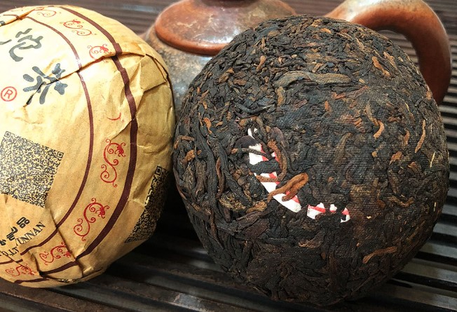
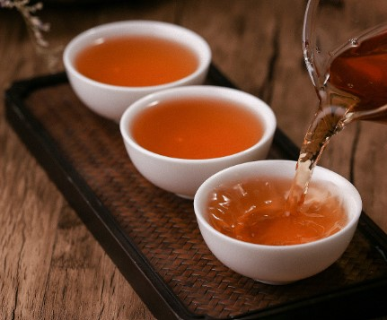
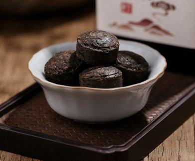
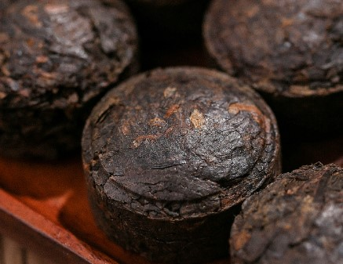

普洱沱茶
云南沱茶属紧压茶，系选用优质晒青毛茶作原料，经高温蒸压精制而成。
形态特征
普洱沱茶从面上看似圆面包，从底下看似厚壁碗， 中间下凹，颇具特色。沱茶的种类，依原料不同的绿茶沱茶和黑茶沱茶之分。绿茶沱茶是以较细嫩的晒青绿毛茶为原料，经蒸压而制成;黑茶沱茶是以普洱茶为原料，经蒸压而制成。
普洱茶外形条索肥、匀实，色泽乌润，白毫密布。茶的品种较多。据清代阮福的《普洱茶说》记载：“普洱茶”二月采蕊极细而白，谓之毛尖，以作贡茶;采而蒸之，揉为茶饼，其 叶少放而犹 嫩者，名芽茶;采于三、四月者，名小满茶;采于六、七月者，名谷花茶;大而圆者，名紧团茶;小而圆者，名女儿茶。
发展历史
沱茶是云南茶叶中的传统制品，历史悠久，古时便享有盛名，早在明代万历年间的《滇略》一书中就有记载:“士庶用皆普茶也，蒸而团之。”据资料记载，形似倒置碗状的云南沱茶定型生产已有六十多年，其特异的形状和优良的品质早已为人们熟知，蜚声海内外。1986年，云南下关茶厂的100克普洱沱茶曾荣获法国巴黎金鸡奖。
名称由来
关于沱茶名称的由来，传闻很多，有人说因其成品形状如团，团由沱转化而来，故得名“沱”，亦有人说过去云南沱茶主要销往四川沱江一带而得名“沱茶”。其外形与普通茶不同，颇具特色，从上面看类似圆面包，从底下看却又类似厚壁碗，中间下凹，每个净重约100克、250克等不等。通常在包装时，每五个用竹箬包成一包，以树皮绳或竹篾捆绑，结实牢靠，很有意思。据说，制作于此同样是为了方便古时长途运输及其长期存储。
分类
历史上云南的沱茶主要分为两类:一类是用晒青毛茶直接蒸压的生沱，具有色泽乌润、汤色清澈、馥郁清香、醇爽回甘的特点，主要销往国内各地。另一类是采用人工渥堆发酵后的普洱散茶做原料，制成的熟沱，其色泽褐红，汤色红亮，性温味甘，滋味醇厚，主要供应出口，远销至西欧、北美以及亚洲各地。两类沱茶的共同特点是:外形紧结端正，冲泡后色、香、味俱佳，且能持久，耐人寻味。
沱茶以下关茶厂出品的最为有名。下关茶厂加工生产的沱茶，以思茅普洱茶区的大叶种晒青毛茶精制而成，原料精细，芽毫显露，外形圆整，褐润洁净，包装古朴精美，特色浓郁。上等的沱茶，均选用二三月份茶树上刚发出的嫩梢作为原料，芽叶细嫩、肥硕，茸毛披附，制成的成品似有银色白纱附面，十分美观。冲泡后，滋味浓酽、香醇，耐冲泡，愈久愈醇，乃茶中的佼佼者，如现在许多茶人争先收购的早期临沧茶厂生产的“银毫沱茶”和下关茶厂在改制前所加工的一系列沱茶等，都具有收藏和鉴赏的价值。
其次，在普洱茶的几大形态中(砖、沱、饼、散)，沱茶属其中最畅销海外市场者，历来都颇受国外消费者的欢迎和认可。究其原因，除外形较另类外，主要还是与普洱茶的功效密不可分。
储存
普洱茶的保存与其它茶叶的存放有着质的区别。绝大多数茶叶的收藏都追求 “保鲜”以防止茶叶氧化，“保鲜”成为一切措施的出发点和目的。普洱茶的保存有哪些条件呢？
保持适当的温湿度，对普洱茶的“陈化”是很有必要的。众所周知，微生物的繁育需要在一定的温、湿度条件下才能快速进行。普洱茶“陈化”过程，其实是一个“氧化”的过程。茶叶多酚氧化酶的活性在20~40℃的范围内，随温度升高而增强，超过此温度，酶活性反而随温度升高而减弱。微生物的活性也有随温湿度升高而加剧的特点，但温度过高，会导致酶活性钝化；湿度过大，茶叶容易发霉而影响饮用价值。最好能将普洱茶含水量控制在8%~10%、储藏温度控制在20~25℃之间。
一般家庭来说，最好将普洱茶存放在临窗的阳台附近，早晚开窗，保持空气清新和对流，这有利于茶叶与空气中的氧气结合，发生非酶促自动氧化而加速“陈化”。“透光”保存，是指在“自然光”下保存普洱茶。不能将茶叶直接暴露在阳光下，也应尽量避免“黑暗”的环境。光线能使叶绿素发生光敏氧化降解，使茶叶色泽显著褐变。光线和风的作用，使茶叶陈化加速，逐渐形成普洱茶“汤色红浓、滋味甘醇、越陈越香”的品质特点。
存放普洱茶的环境一定不能有任何污染。污染，是储藏任何茶叶都十分忌讳的，普洱茶的储藏也不例外。由于普洱茶含有萜烯类化合物和高分子棕榈酸，能很快吸收其它物质的气味而掩盖或改变茶叶本来的气味，所以，家庭储藏普洱茶，应严格防止家庭油烟、化装品、药物、卫生球、香料物(如空气清新剂、灭蚊片)等常见气味以及人体本身的“体味”的污染。有条件的家庭，最好能有专门的“藏茶室”，良亦可将阳台等次生活空间改造为储茶台、储茶柜。